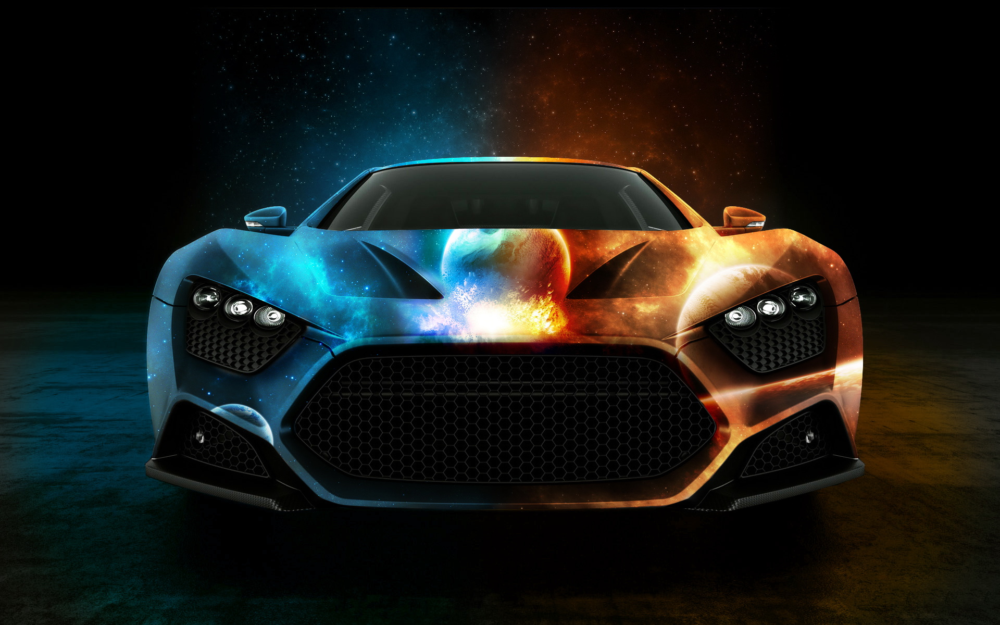

-
写出4种颜色值的表达方式
#word{
color: red;
}
#rgb1{
color: rgb(211, 112, 121);
}
#rgb2{
color: rgb(25%, 67%, 85%);
}
#six{
color: #00CC00;
}
第一种是直接写颜色的英文单词
第二种是rgb方式(r代表红色，g代表绿色，b代表蓝色)三个的取值范围在0~255之间
第三种方式是按照百分比的方式在rgb中进行添加，同样r代表红色，g代表绿色， b代表蓝色
第四种是使用16进制设定颜色#后面的前面两个数字代表红色，中间两个代表绿色，最后两个代表蓝色
-
写出设置1.8倍行高的全部方式
#height{
line-height: 1.8;
}
呃! 这个我只知道这一个...
-
写出两个价格，给较高价格添加删除修饰效果
#price{
font-size: 24px;
color: red;
}
#delete{
text-decoration: line-through;
}
$4999.00
$5999.00
-
写一段文字至少两行，添加首行缩进2个字的距离
.sc{
text-indent: 2em;
}
今夕何夕兮，搴舟中流。
今日何日兮，得与王子同舟。
蒙羞被好兮，不訾诟耻。
心几烦而不绝兮，得知王子。
山有木兮木有枝，心悦君兮君不知。
-
My CSS转为全小写,MY Css转为全大写，my css转为首字母大写
#lower{
text-transform: lowercase;
}
#upper{
text-transform: uppercase;
}
#title{
text-transform: capitalize;
}
My css
MY CSS
my css
-
文字+图片，控制文字与图片垂直方向对齐
img.top{
width: 200px;
height: 100px;
vertical-align: text-top;
}
img.buttom{
width: 200px;
height: 100px;
vertical-align: text-bottom;
}
头像 头像
头像
logologo
-
设置Hello World单词间距为2个字符。
.hw{
text-transform: capitalize;
word-spacing: 2em;
}
hello world
-
写一段文字至少4行，设置文本分散对齐。
.disperse{
text-align:justify;
text-justify:inter-word;
}
三月的清风掀开了心幕，拂落指尖红纸，我写下往事幕幕。对晚镜，孤灯伴孤影，自古多情属西窗。
今宵帘幕前，思故人，空馀枕泪。这眸里风光万千，如今为谁开?粉消香薄非他日，又且同风月长依旧。
空记当时后庭中，吟诗作曲抚琴夜，恩爱惹人妒。多情惟有真心贵，冉冉韶华终一梦。
今宵宿醉残更，欲写幽怀恨句。红尘何尽，你曾是我看不完的风景，却琴音乍停。
十年，我将自己淹没在浮满花瓣的池水中，狰狞的疤横于胸口。
我终是没能陪你到最后，可依然记着那无数个风花雪月的夜，眼前都是无望的绿，无边竹海。而今我又来到这，纤足细步走到当年的桂树旁，复弹琴，敛眸问风月。
也许只有这样，心才最痛，也才最忘不了你，也才最觉得离你很近。
-
写一个盒子宽300px，里面有一行长度超出盒子宽的文字，添加样式使得多余的文字用省略号显示
.box{
white-space: nowrap;
width:300px;
overflow:hidden;
border:1px solid #000000;
text-overflow: ellipsis;
}
写一个盒子宽300px，里面有一行长度超出盒子宽的文字，添加样式使得多余的文字用省略号显示
-
描述word-break与word-wrap的区别
.wb{
width: 300px;
background-color: #4cae4c;
word-break: break-all;
border: 1px solid black;
}
.ww{
width: 300px;
background-color: orange;
word-wrap: break-word;
border: 1px solid black;
}
word-break是表示怎么样的来进行单词内的断句, 在单词换行的时候比较紧凑，不会有空格
word-wrap是表示是否允许单词内进行断句， 在单词换行的时候，如果余下的大小不到下一个单词的长度，那么会直接换行
word-break的例子:
The word-break property of CSS is used to indicate how to break a sentence within a word.
word-break 属性不兼容 Opera.
word-wrap的例子:
The word-break property of CSS is used to indicate how to break a sentence within a word.
-
有个盒子宽200，高100，任意在百度找一张图，放入盒子里面，设置样式保证图不被拉伸，且在盒子中全部显示
.box1 img{
width:200px ;
max-height: 100px;
}
-
有个内容层800宽，里面有文字有图片，在百度上找2张图，一张小于800宽，一张大于800宽，设置图片宽度不能超过内容层
.content{
width: 800px;
border: solid 1px black;
}
.content img{
max-width: 800px;
}
有个内容层800宽，里面有文字有图片，在百度上找2张图，

一张小于800宽，一张大于800宽，设置图片宽度不能超过内容层
-
什么时候需要设置最小高
设置最小高是在保证内容过少或者为空的情况下可以使页面保持一个最小的高度，内容超出的时候可以自动撑开
-
配合:hover写出鼠标放在对象上显示的样式
.hv p:hover{
display: block;
cursor: move;
}
-
写出margin有1个、2个、3个、4个值的时候分别代表的是哪些边
.one{
display: inline-block;
width: 100px;
height: 100px;
background: red;
margin: 2px;
}
.two{
display: inline-block;
width: 100px;
height: 100px;
background: green;
margin: 2px 5px;
}
.three{
display: inline-block;
width: 100px;
height: 100px;
background: blue;
margin: 2px 3px 4px;
}
.four{
display: inline-block;
width: 100px;
height: 100px;
background: orange;
margin: 1px 2px 3px 4px;
}
当margin只有一个值的时候代表所有的边都设置
当margin有两个值的时候第一个代表上下，第二个代表左右
当margin有三个值的时候第一个代表上，第二个代表左右，第三个代表下
当margin有四个值的时候第一个代表上，第二个代表右，第三个代表下，最后一个代表左
一个值
两个值
三个值
四个值
-
margin-bottom使用百分比的时候有什么需要注意的
margin-bottom的定义是基于父对象总高度的百分比下外边距。
如果没有设置父级的总高度，那么会以屏幕的大小的总高度为准，
在使用时最好需要设置父级的高度然后再设置margin-buttom
-
描述边距叠加
.parent{
width: 200px;
height: 200px;
background-color: red;
border: 1px black dashed;
}
.child{
width: 100px;
height: 100px;
background: green;
margin-bottom: 10px;
}
.brother{
width: 50px;
height: 50px;
margin-bottom: 10px;
background-color: green;
}
.younger{
width: 50px;
height: 50px;
margin-top: 20px;
background-color: blue;
}
.first{
height: 50px;
background-color: green;
}
.cen{
margin-top: 10px;
margin-bottom: 20px;
}
.last{
height: 50px;
background-color: cyan;
}
1.父元素的边距不会计算子元素上的边距
2.兄弟元素上下边距重叠，兄元素设置下边距，弟元素设置上边距，两者之间去较大值
3.空元素上下边距重叠，取较大值
-
一对父子盒子：父盒子500*300，用宽、高、间距写，使得小盒子200*100正居中在父盒子里
.parent1{
width: 500px;
height: 300px;
background-color: red;
overflow: hidden;
}
.child1{
width: 200px;
height: 100px;
background-color: cyan;
margin: 100px 150px;
}
-
一对父子盒子：父盒子500*300，只用定位写,使得小盒子200*100正居中在父盒子里
.parent2{
position: relative;
width: 500px;
height: 300px;
background-color: red;
}
.child2{
width: 200px;
height: 100px;
position: absolute;
top: 100px;
left: 150px;
background-color: blue;
}
-
一对父子盒子：父盒子500*300，用宽、高、间距、定位写,使得小盒子200*100正居中在父盒子里
.parent2{
position: relative;
width: 500px;
height: 300px;
background-color: red;
}
.child3{
width: 200px;
height: 100px;
position: absolute;
margin-top: 100px;
margin-left: 150px;
background-color: green;
}
-
写一个宽500，高300的层，不管网页怎么滚动，能正居中在窗口中。可添加层做辅助
.flex1{
width: 500px;
height: 300px;
background-color: green;
position: fixed;
top: 50%;
left: 50%;
margin-top: -150px;
margin-left: -250px;
}
此为写一个宽500，高300的层，不管网页怎么滚动，能正居中在窗口中。可添加层做辅助作业,点击后消失
-
padding-bottom使用百分比的时候有什么需要注意的
padding-bottom使用百分比的时候会参照照父元素的高度
比如：父元素高度是100px, 子元素padding-bottom:50%，那么padding-bottom的实际值就是100*50%=50px
-
做8个尖角
.eight{
position: relative;
top: 30px;
left: 50px;
width: 200px;
height: 200px;
background: #00AA88;
}
.item0{
width: 0;
height: 0;
border: 50px solid transparent;
}
.item1{
border-top-color: #0E0E6D;
position: absolute;
top: 200px;
}
.item2{
border-top-color: #00b3ee;
position: absolute;
top: 200px;
left: 100px;
}
.item3{
border-bottom-color: yellow;
position: absolute;
top: -100px;
}
.item4{
border-bottom-color: yellowgreen;
position: absolute;
top: -100px;
left: 100px;
}
.item5{
border-right-color: blue;
position: absolute;
left: -100px;
}
.item6{
border-right-color: purple;
position: absolute;
left: -100px;
top: 100px;
}
.item7{
border-left-color: aqua;
position: absolute;
left: 200px;
}
.item8{
border-left-color: purple;
position: absolute;
left: 200px;
top: 100px;
}
-
百分比列表，鼠标效果添加外边框
.list{
list-style: none;
}
.list-1:hover{
outline:green dotted 4px;;
}
-
大盒子写了圆角，盒子里面的内容还是保持的原样,(大盒子写overflow:hidden，给内容盒子也添加圆角)
.big-box{
width: 100px;
height: 25px;
background: green;
border-radius: 10px;
overflow: hidden;
}
大盒子写了圆角，盒子里面的内容还是保持的原样,(大盒子写overflow:hidden，给内容盒子也添加圆角)
-
写出8个层，分别对应8方向的投影。投影距离为10px，边界分明;
.main0{
width: 400px;
height: 400px;
background-color: red;
position: relative;
box-shadow: 5px 5px 10px #888888;
}
.son1{
width: 350px;
height: 350px;
background-color: yellow;
position: absolute;
top: 25px;
left: 25px;
box-shadow: 5px -5px 10px #888888;
}
.son2 {
width: 300px;
height: 300px;
background-color: blue;
position: absolute;
top: 25px;
left: 25px;
box-shadow: -5px 5px 10px #888888;
}
.son3 {
width: 250px;
height: 250px;
background-color: green;
position: absolute;
top: 25px;
left: 25px;
box-shadow: -5px -5px 10px #888888;
}
.son4 {
width: 200px;
height: 200px;
background-color: orange;
position: absolute;
top: 25px;
left: 25px;
box-shadow: 5px 0 10px #888888;
}
.son5 {
width: 150px;
height: 150px;
background-color: purple;
position: absolute;
top: 25px;
left: 25px;
box-shadow: -5px 0 10px #888888;
}
.son6 {
width: 100px;
height: 100px;
background-color: cyan;
position: absolute;
top: 25px;
left: 25px;
box-shadow: 0 5px 10px #888888;
}
.son7 {
width: 50px;
height: 50px;
background-color: brown;
position: absolute;
top: 25px;
left: 25px;
box-shadow: 0 -5px 10px #888888;
}
-
写出5个层，分别对应4个正方向的投影和一个四周的投影。投影距离为10px，边界模糊;
.tier1{
width: 200px;
height: 200px;
background-color: red;
position: relative;
box-shadow: 5px 5px 10px #888888,5px -5px 10px #888888,-5px 5px 10px #888888,-5px -5px 10px #888888;
}
.tier2{
width: 176px;
height: 176px;
background-color: yellow;
position: absolute;
top: 12px;
left: 12px;
box-shadow: 5px 0 10px #888888;
}
.tier3{
width: 152px;
height: 152px;
background-color: blue;
position: absolute;
top: 12px;
left: 12px;
box-shadow: -5px 0 10px #888888;
}
.tier4{
width: 128px;
height: 128px;
background-color: green;
position: absolute;
top: 12px;
left: 12px;
box-shadow: 0 5px 10px #888888;
}
.tier5{
width: 104px;
height: 104px;
background-color: orange;
position: absolute;
top: 12px;
left: 12px;
box-shadow: 0 -5px 10px #888888;
}
-
写一个层类似QQ聊天窗口有背景，滚动聊天窗口时，背景保持不动
#qqlt{
width: 400px;
height: 300px;
background-image: url("../images/car.jpg");
background-attachment: fixed;
background-repeat: no-repeat;
background-color: rebeccapurple;
overflow: scroll;
color: white;
}
窗前明月光
疑似地上霜
举头望明月
低头思故乡
写一个层类似QQ聊天窗口有背景，滚动聊天窗口时，背景保持不动写一个层类似QQ聊天窗口有背景，滚动聊天窗口时，背景保持不动
2
3
4
5
6
-
写一对父子盒子，父盒子有背景图，子盒子又半透明有背景色
.parent3{
width: 400px;
height: 400px;
background-image: url('../images/lou3.jpg');
overflow: hidden;
}
.child4{
width: 200px;
height: 200px;
margin: 100px;
background-color: rgba(0, 255, 0, 0.5)
}
-
写一个雪碧图的使用
.box2 div{
width: 40px;
height: 40px;
background-repeat: no-repeat;
background-image: url("../images/browser.gif");
margin: 3px 0;
}
.chrome{
background-position: left 0px;;
}
.firefox{
background-position: left -100px;;
}
.edge{
background-position: left -50px;
}
.opera{
background-position: left -150px;
}
.safari{
background-position: left -202px;
}
background-position设置的是图片的位置，不是设置元素的所在的位置
-
写出box-sizing的默认值
.container{
width: 400px;
height: 30px;
background:#000000;
border: 20px solid black;
}
.cbox{
width:50%;
box-sizing: content-box;
border: 20px solid red;
color: purple;
}
默认值是content-box,如果要设置border-box的话，火狐浏览器使用-moz-box-sizing:border-box;
-
字体尺寸有哪些单位？
.fp{
font-size: 24px;
}
.xx-small{
font-size: xx-small;
}
.x-small{
font-size: x-small;
}
.small{
font-size: small;
}
.medium{
font-size: medium;
}
.xx-large{
font-size: xx-large;
}
.x-large{
font-size: x-large;
}
.large{
font-size: large;
}
把字体的尺寸设置为不同的尺寸，从 xx-small 到 xx-large。默认值：medium。(固定值)
xx-small(最小号)
x-small(中小号)
small(小号)
medium(默认)
large(大)
xx-large(中大)
x-large(特大)
-
font-style主要是什么样式？
normal(默认值。浏览器显示一个标准的字体样式。)
italic(浏览器会显示一个斜体的字体样式。)
oblique(浏览器会显示一个倾斜的字体样式。)
-
Hello World 写成 HELLO WORLD
.fv{
font-variant:small-caps;
text-transform: capitalize
}
Hello World
Hello World
-
有个h1标签，写样式使得h1里面的字体不加粗
.fw{
font-weight: lighter;
}
有个h1标签，写样式使得h1里面的字体不加粗
-
写出引用字体文件的基本格式
@font-face{
font-family: "我的字体";
src:url('字体路径(可多选)');
font-stretch: "是否需要被拉长(可选)";
font-style:"定义是怎样的样式(可选)";
font-weight:"是否加粗字体(可选)"
}
-
做个带编号的目录
.cs{
counter-reset: cate;
}
.cs p:before{
counter-increment: cate;
content: "目录" counter(cate) ". ";
}
Css
HTML
JavaScript
Pthon
Java
-
给层设置opacity时需要注意什么
如果有多个盒子叠加的时候给最低层次的盒子设置了透明度的话，会将后面的所有层次都设置为该透明度,
而且只能加透明度，不能减